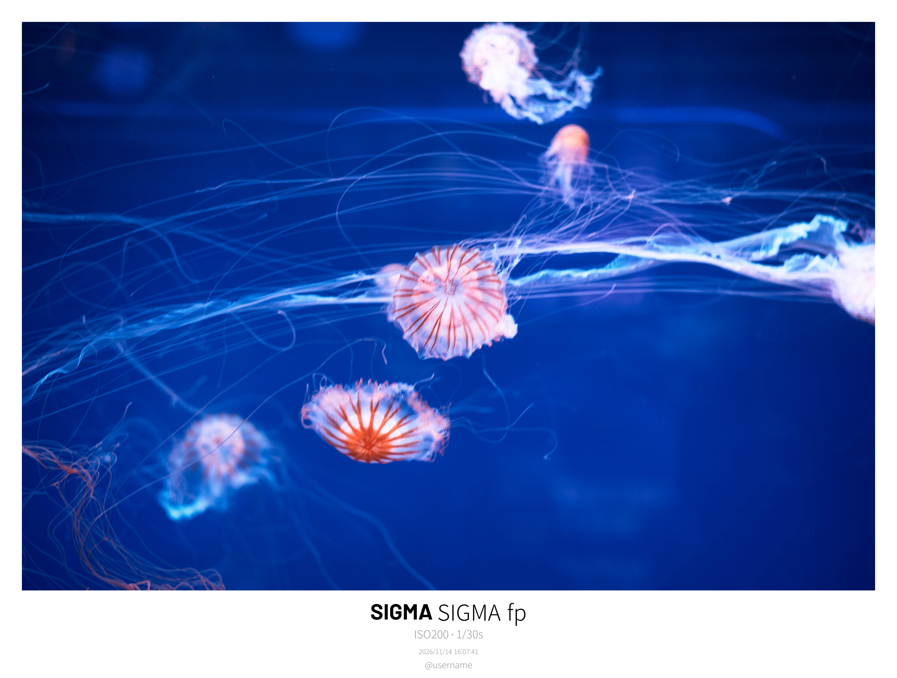
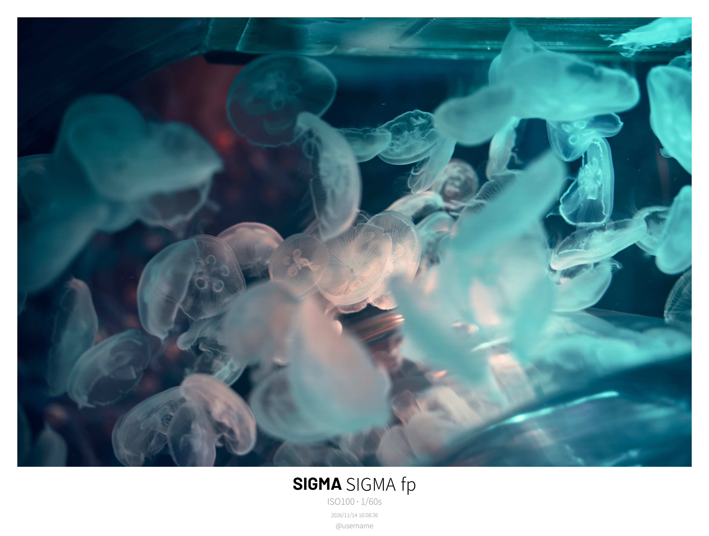
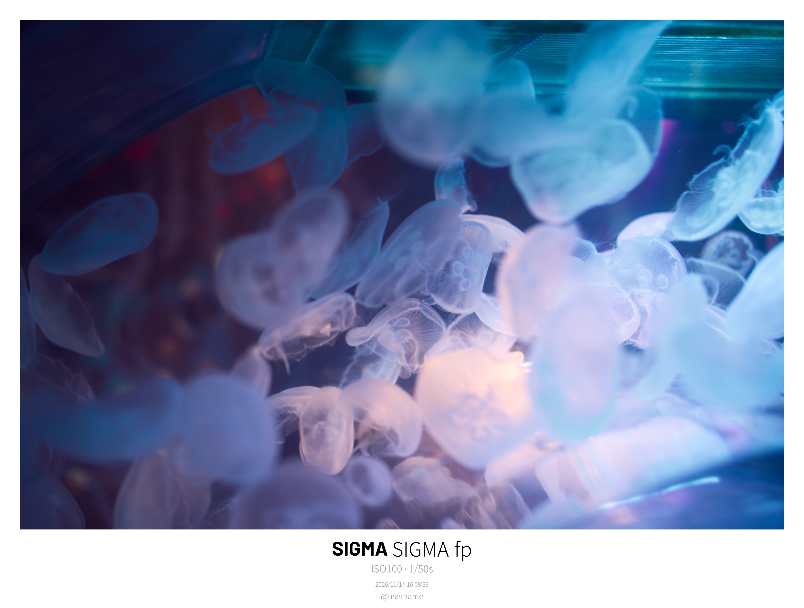
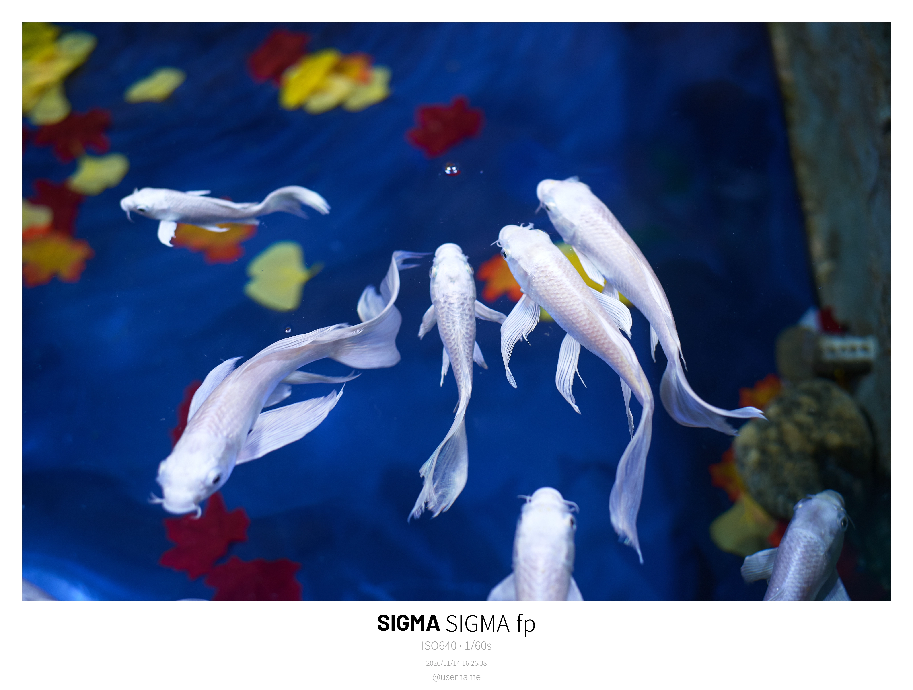
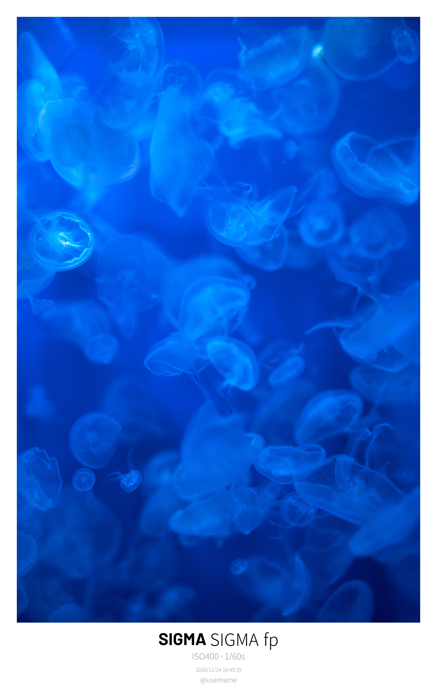
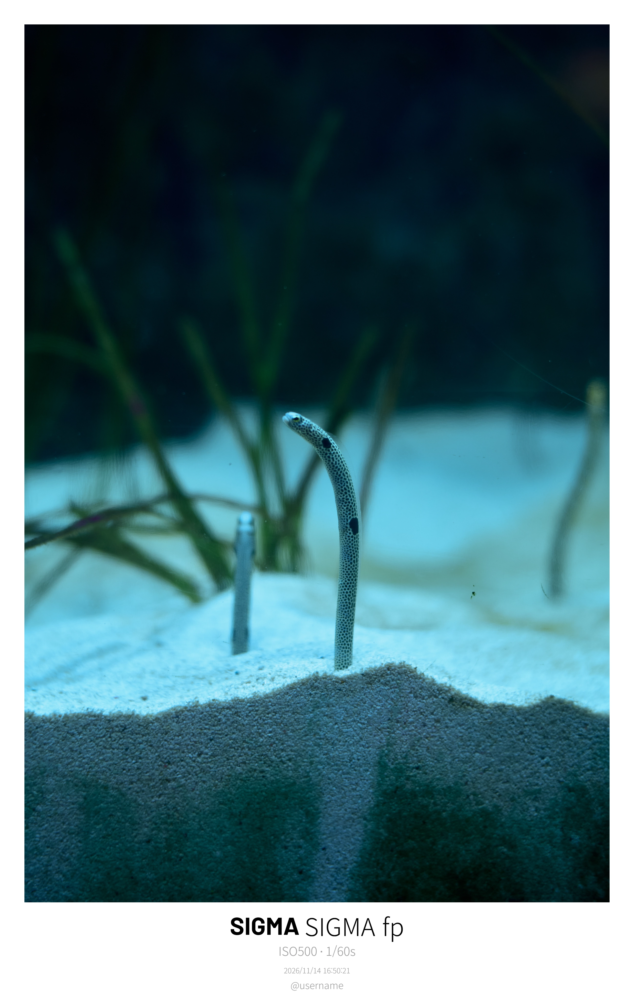
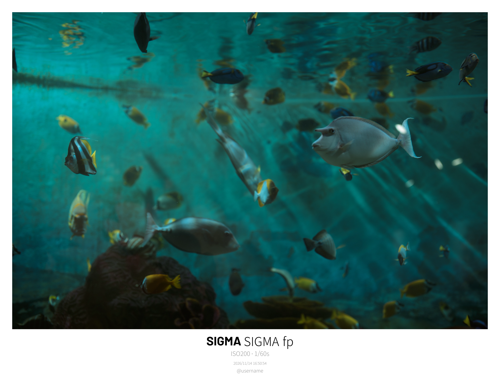
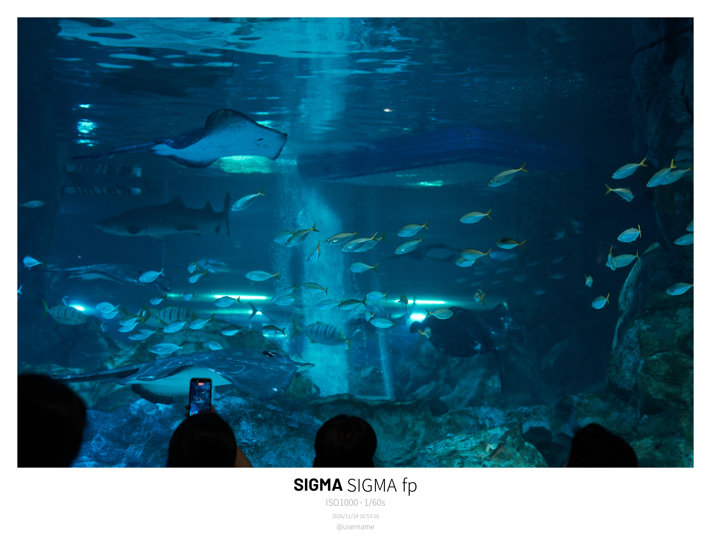
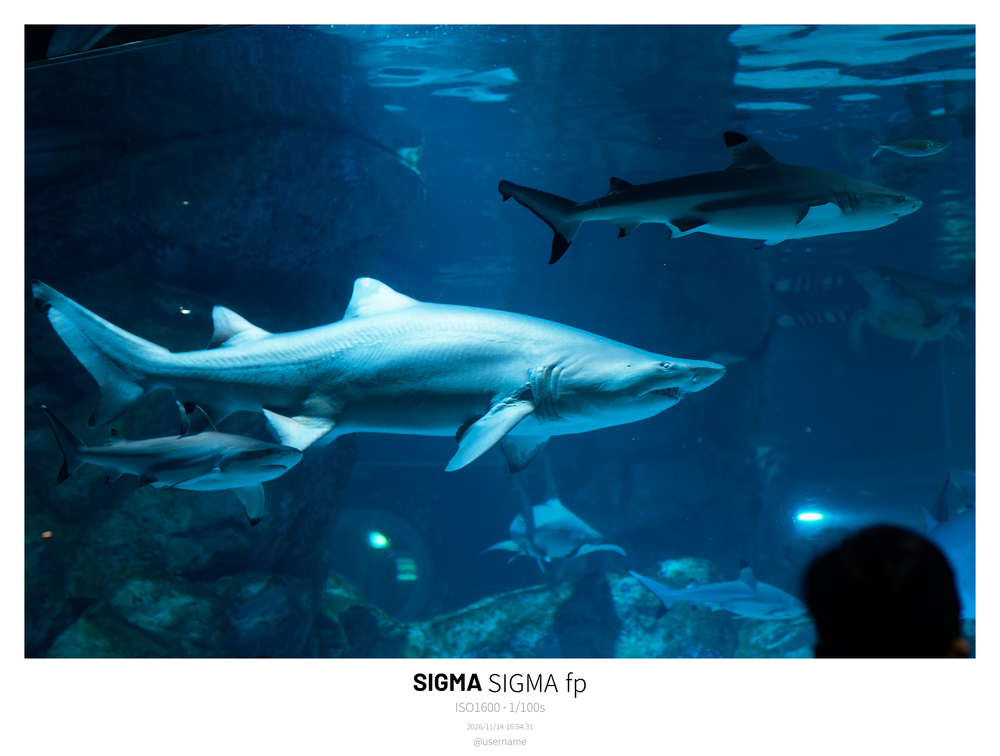
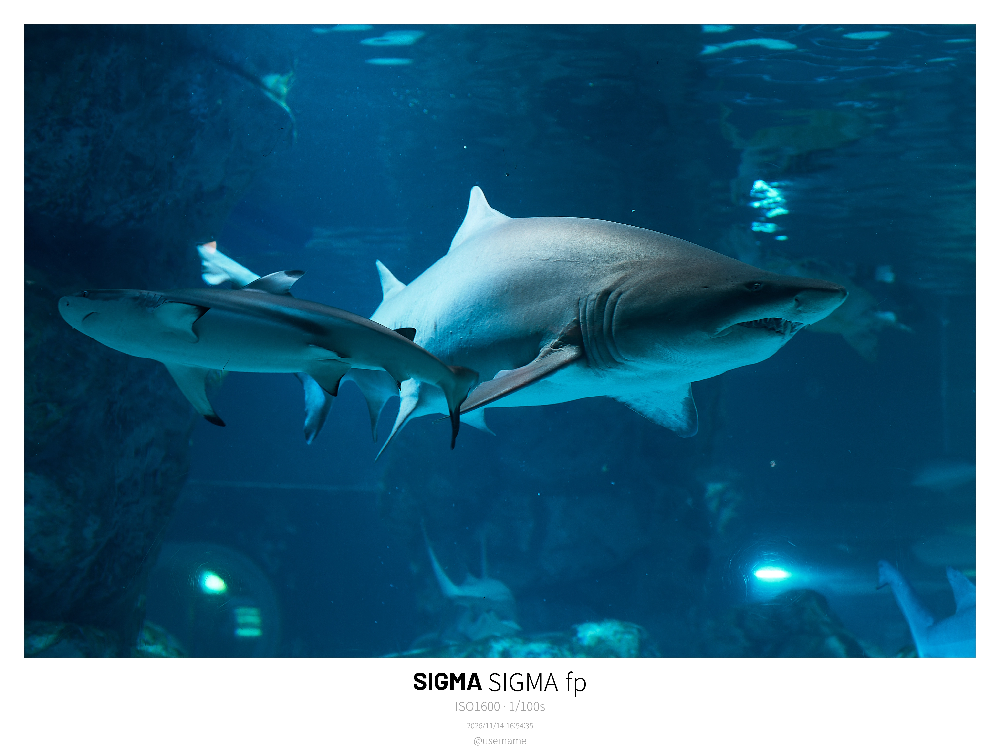
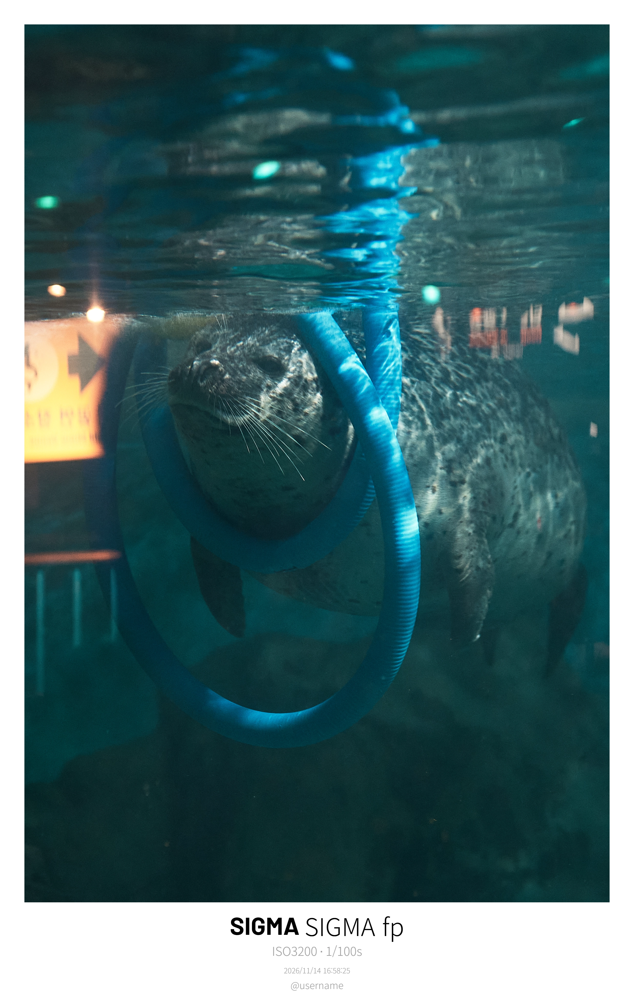
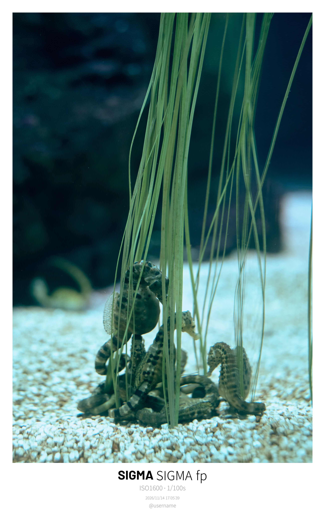
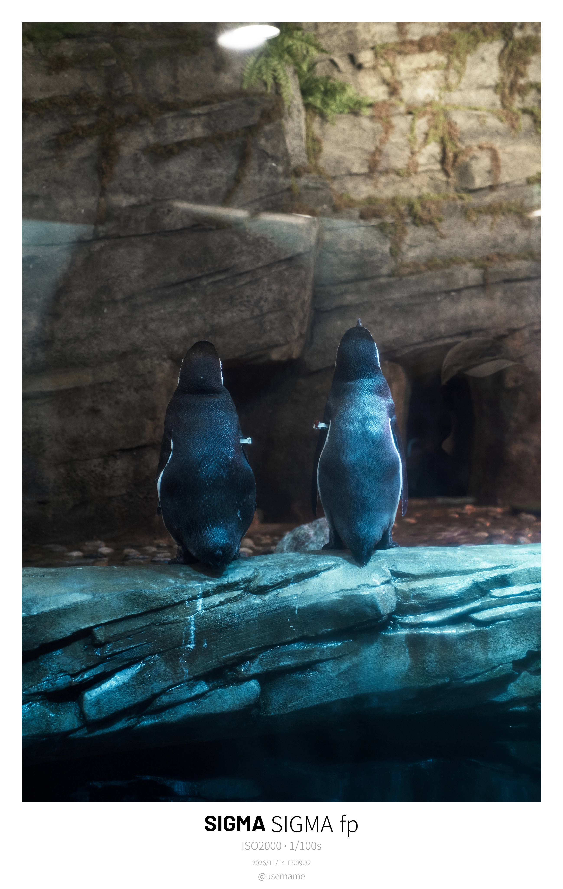
아쿠아리움은 af 좋은 바디와 렌즈를 들고가자 라는 교훈을 얻고옴..
시그마 fp+ ttartisan 50mm f1.4 asph













아쿠아리움은 af 좋은 바디와 렌즈를 들고가자 라는 교훈을 얻고옴..
시그마 fp+ ttartisan 50mm f1.4 asph
댓글
수집 당시 댓글 11개
Lumix · 11.15 21:16:24
· 보더보더콜리 · 11.15 21:19:08
아조씨 · 11.15 21:19:04
갯것 · 11.15 21:26:45
디붕이1 · 11.16 18:18:43
봇치쟝 · 11.19 08:40:59
ㅇㅇ · 11.19 09:02:35
ㅇㅇ · 11.19 09:12:33
좃구녕 · 11.19 09:24:02
ㅇㅇ · 11.19 09:53:42
ㅇㅇ · 11.19 11:33:41